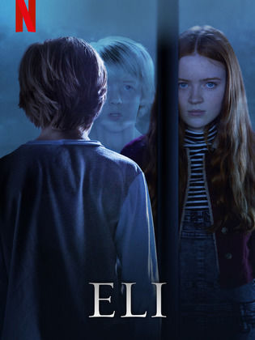

ELI (2019)
Eli, nadir görülen bir hastalıktan muzdarip olan genç bir çocuktur. Hastalığı için çeşitli tedaviler denense de istenilen sonuç bir türlü alınamaz. Son olarak tedavi için ıssız bir ortamda bulunan bir kliniğe götürülür. Klinik başlarda bu zamana kadar tedavi gördüğü diğer merkezlere benzemektedir. Ancak bir süre sonra Eli, gölgelerde saklanan kötü bir varlığın farklında varır. Gördüklerinden sonra klinikten kaçmaya çalışan Eli, kendisini büyük bir tuzağın içesinde bulur.Acaba kaçabilecek mi ya da klinikteki doğaüstü olayları mı anlamaya başlayacak?
Süre: 1 saat 38 dakika
İzlemek için önerilen siteler: Netflix.com , fullhdfilmizlesene.com
Benim fikrim: Çok güzel bir film kesinlikle tavsiye ediyorum Sürükleyici ve sonu şaşırtmalı biten bir film arıyorsan doğru filmi buldun demektir.